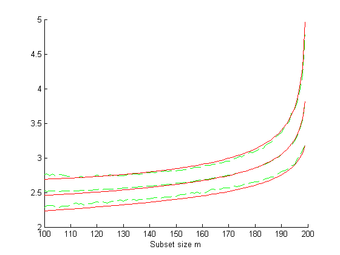

| Flexible Statistics Data Analysis Toolbox™ |
|
Theoretical envelopes of Minimum Mahalanobis Distance outside subset during the search
[MMDenv]
= FSMenvmmd(n,p)
[MMDenv] = FSMenvmmd(n,p,param1,val1,param2,val2,...)
[MMDenv] = FSMenvmmd(n,p) computes the envelopes of the minimum Mahalanobis Distance. This function exploits the link between minimum outside subset and m+1th ordered distance together with the relationships between random variables.
n : scalar, number of observations
p : number of variables
[MMDenv] = FSMenvmmd(n,p) returns the following information
[MMDenv] = FSMenvmmd(n,p,val1,param2,val2,...) specifies one or more of the name/value pairs described in the following table.
| Parameter | Value |
|---|---|
| 'init' |
Scalar which specifies the initial subset size to monitor the minimum Mahalanobis distance, if init is not specified it will be set equal to floor(n*0.6). |
| 'prob' |
1-by-k vector containing quantiles for which envelopes have to be computed. The default is to produce 1%, 50% and 99% envelopes. |
| 'exact' |
Scalar, if it is equal to 1 (default) the calculation of the quantiles of F distribution is based on function finv and from the Matlab statistics toolbox, otherwise the calculations of the former quantiles is based on functions invcdff. The solution has a tolerance of 1e-8 ( variable tol in file invcdff.m). Remark: the use of function finv is more precise but requires more time. |
| 'unscaled' |
Scalar, if unscaled is equal to 1 (default) the envelopes are produced for unscaled Mahalanobis distances. In other words, Tallis consistency factor is applied else no consistency factor is applied. |
In this example we compare the accuracy of the envelopes computed with order statistics with those which come from simulations.
% Fix a seed
state=1000;
mtstream = RandStream('shr3cong','Seed',state);
RandStream.setDefaultStream(mtstream);
defaultStream = RandStream.getDefaultStream();
reset(defaultStream)
% If you run this example in a version older than 7.9 replace the previous
% four lines with
% randn('state', 1000);
n=200;
p=3;
init=100;
nsimul=1000;
mmdStore=zeros(n-init,nsimul);
for j=1:nsimul
Y=randn(n,p);
[fre]=unibiv(Y);
%create an initial subset with the 20 observations with the lowest
%Mahalanobis Distance
fre=sortrows(fre,4);
bs=fre(1:20,1);
mmd = FSMmmd(Y,bs,'init',init);
mmdStore(:,j)=mmd(:,2);
end
% Sort rows of matrix mmdStore
mmdStore=sort(mmdStore,2);
% Create figure which compares empirical and theoretical forward envelopes
% for minimum deletion residual
figure;
hold('on');
quant=[0.01 0.5 0.99];
sel=round(nsimul*quant);
% Plot lines of empirical quantiles
line(mmd(:,1),mmdStore(:,sel),'LineStyle','--','Color','g');
% Plots lines of theoretical quantiles using order statistics
mmdT=FSMenvmmd(n,p,'exact',1,'init',init);
line(mmdT(:,1),mmdT(:,2:4),'LineStyle','-','Color','r');
xlabel('Subset size m');
The plot you get is displayed below. The agreement between the two sets of bands appears good.

|
|
fsmeda.html | fsmfan.html |
|